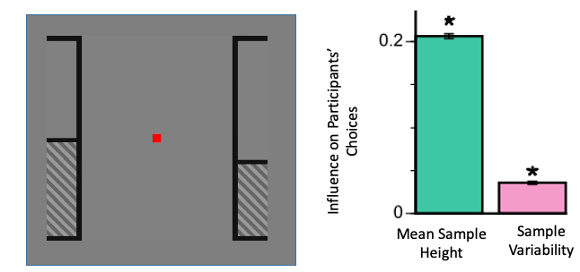

Ketamine and Decision Making
A subanaesthetic dose of ketamine is an effective pharmacological model of psychosis; recapitulating positive, negative and cognitive symptoms. Ketamine also exacerbates symptoms in people with schizophrenia. Ketamine binds to a variety of receptors, but principally acts at the NMDA-R. To gain a greater understanding of the neural basis of psychosis, we designed a study incorporating behavioural analyses, electrophysiology, pharmacology, and neural network modelling.
Participants began by learning a challenging decision-making task - where they had to combine information across time. They had to make a decision about which side had the 'taller' average height:

Behavioural analyses of control data revealed that mean sample height (unsurprisingly) was the primary driver of choices. More surprisingly, choices were also irrationally influenced by sample variability (to a lesser extent). This revealed that subjects showed a ‘pro-variance’ bias:

Next, we trained a biologically realistic neural network to perform the same decision-making task. We then interfered with the activity of NMDA-R at different points in the circuit, to see how it would affect decision-making:
Finally, we gave subjects either saline or ketamine, to compare the decision-making with our model predictions:
Take home point – Ketamine may act to lower the balance between excitation and inhibition in cortical decision circuits. This could lead to specific impairments in decision-making behaviour, and explain the decision-making deficit experienced in psychosis.
To learn more about this work, please see the relevant publication or you could listen to my podcast interview:
Cavanagh, SE., Lam, NH., Murray, JD., Hunt, LT., & Kennerley, SW. (2020). A circuit mechanism for decision-making biases and NMDA receptor hypofunction - eLife [Link] [Code] [Data]
[Naked Scientists Podcast]